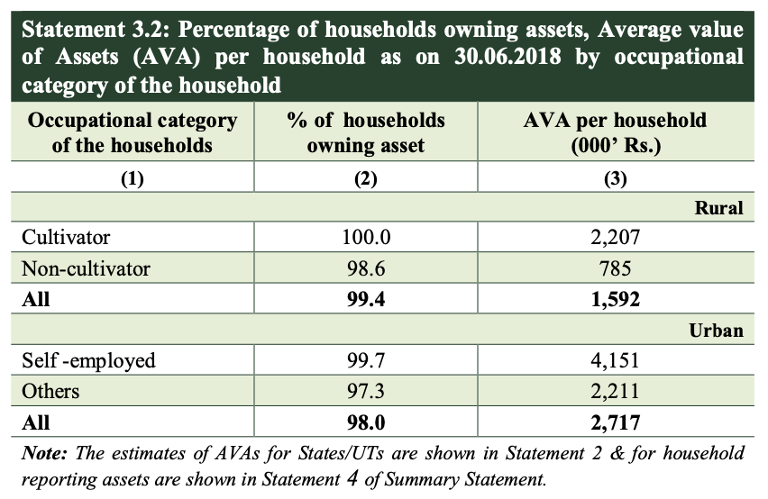

The All-India Debt and Investments Survey conducted during the NSS 77th round in 2019 provides us an estimate for the value of land owned by households. For context, I’m collecting data to estimate the revenue that can be raised by taxing land rents in India. Since households are the largest holders of land (by value), I consider this job to be mostly done. I’ll cover what is left, in brief, at the end of this post. I’ve previously convered World Bank’s estimate for India’s agricultural land, McKinsey’s estimate for the global average land value and the value of surplus land owned by the government in India.
1 Valuation method
Value of land as on 30.06.2018 was reported as per their normative/guideline values. For buildings, valuation was done as per the market price prevailing in the locality.
By “normative/guideline values”, I think they mean circle rates (i.e. what are, usually, used to pay property taxes and maybe also stamp duty) or their equivalent. There is good reason to believe that this is likely an underestimate.
2 Average asset values


From this, we can infer the following:
| Category | Urban | Rural |
|---|---|---|
| Average Value of Assets | Rs. 2,717,000 | Rs. 1,592,000 |
| Percentage Share of Land | 49.4% | 69.2% |
| Land Value | Rs. 1,342,198 | Rs. 1,101,664 |
| Percentage Share of Building | 37.5% | 22.3% |
| Building Value | Rs. 1,018,875 | Rs. 355,016 |
| Property Value | Rs. 2,361,073 | Rs. 1,456,680 |
| Percentage Share of Property | 86.9% | 91.5% |
3 Total household property value
To estimate the total household land values, I had to use other data and had to make a couple of assumptions. I took the figure for total population from World Bank, made the assuption of urban India’s share of GDP as 60% based on UN’s World Urbanization Prospects, 2018 and took the household size as 4.51 for both urban and rural areas. Based on these assumptions, I got the following figures for land, building and total property value owned by households:
3.1 Land
| Urban | Rural | Total | |
|---|---|---|---|
| INR trillions | 162.65 | 203.59 | 366.24 |
| Multiple of Urban/Rural GDP | 1.35 | 2.53 | - |
| Multiple of GDP | 0.81 | 1.01 | 1.82 |
3.2 Building
| Urban | Rural | Total | |
|---|---|---|---|
| INR trillions | 123.47 | 65.61 | 189.08 |
| Multiple of Urban/Rural GDP | 1.02 | 0.82 | - |
| Multiple of GDP | 0.61 | 0.33 | 0.94 |
3.3 Total property (i.e. real estate value)
| Urban | Rural | Total | |
|---|---|---|---|
| INR trillions | 286.12 | 269.20 | 555.32 |
| Multiple of Urban/Rural GDP | 2.37 | 3.35 | - |
| Multiple of GDP | 1.42 | 1.34 | 2.76 |
4 Definition of household
I think it’s also important to know the definitions of “household” as per this survey.
A group of persons normally living together and taking food from a common kitchen constitutes a household. It includes temporary stay-aways (those whose total period of absence from the household is expected to be less than 6 months during the survey period) but excludes temporary visitors and guests (expected total period of stay less than 6 months during the survey period).
I think it’s important to note the definition of households because the definition of household is different as per the Indian system of National Accounts:
According to the Indian System of National Accounts (CSO (2012)), the ‘household’ sector in India comprises of individuals, unincorporated establishments (like sole proprietorships and partnerships), non-profit institutions serving households (like educational institutions, charitable trusts, non-governmental organisations (NGOs) political parties, and so on) and all non-government non-corporate enterprises (like farms and non-farm businesses). Thus, in addition to individuals, the household sector also includes all enterprises/economic units that are not covered in the other three domestic sectors (4) of the economy. Technically, this interpretation is different from the definition of ‘households’ as proposed by the United Nations System of National Accounts — SNA 2008 (United Nations (2009)), which includes only individuals and groups of persons sharing the same living accommodation or pooling some or all of their income and wealth, wherein each member of the household has some claim upon the collective resources of the household; it thereby excludes non-profit institutions.
5 What’s left to account for
I think with this, we just have to find a reasonable estimate for the land held by non-financial corporations. They’d be major landowners apart from households (which includes non-profits as per the Indian system of National Accounts) and the government. I guess the government should have the data on real assets of NFCs since they submit balance sheets annually but it would underestimate land values because I think it’s recorded at the historical cost and not fair market value. I haven’t been able to find the data though. RBI has only released the financial stocks and flows, not real assets. Akash Malhotra, who believes the RBI has overestimated the stocks for households, only included data on financial stocks of households in his paper. Credit Suisse’s Global Wealth Databook also doesn’t include the value of real assets of non-financial corporations. The only estimate I have found is McKinsey’s global average: